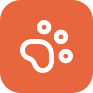

MiaumigoPolítica de Privacidade
Última atualização: 8 de novembro de 2026
O Miaumigo é um aplicativo pessoal para organizar a saúde, a agenda e os gastos de animais de estimação. Esta política explica quais dados o app usa e como eles são tratados.
Dados que você cadastra
Informações dos pets (nome, espécie, fotos, peso, vacinas, remédios, consultas, gastos, ração e anexos como receitas e exames). Esses dados são seus e servem apenas para o funcionamento do app.
Onde os dados ficam
O uso do Miaumigo exige uma conta gratuita. Seus dados ficam em um banco de dados no Supabase, hospedado em São Paulo (Brasil), e uma cópia fica no aparelho para o app funcionar mesmo sem internet. Regras de acesso no banco garantem que cada conta só veja os próprios dados. Ao sair da conta, a cópia do aparelho é apagada.
Login com o Google
Se você escolher entrar com o Google, o app recebe apenas seu nome, e-mail e foto de perfil, usados para identificar sua conta. O Miaumigo não acessa seus contatos, e-mails, arquivos ou qualquer outro dado da sua Conta do Google.
O que não fazemos
- Não vendemos nem compartilhamos seus dados com terceiros para publicidade.
- Não usamos rastreadores de anúncios.
- Os dados são usados exclusivamente para exibir e sincronizar suas informações no app.
Notificações
Os lembretes são gerados no seu próprio aparelho. Se você exportar a agenda para o calendário, o arquivo é criado localmente e você decide onde importá-lo.
Seus direitos (LGPD)
Você pode baixar uma cópia dos seus dados a qualquer momento (Minha conta → Configurações → Conta → Baixar meus dados). Para excluir sua conta e todos os dados da nuvem, ou para qualquer dúvida sobre privacidade, escreva para tavoschlickmann@gmail.com.